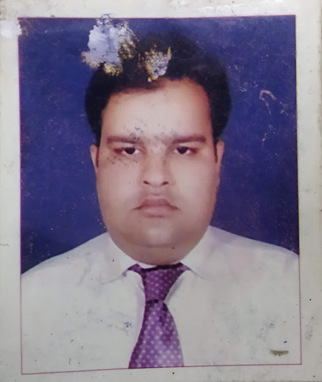

Qamar Abbas

Address : 2-Dallan Building Victoria street L.K.O
Phone : 07408449327
Date of Birth : 02-July-1981
Marital Status : Married
Email : qamarlko@gmail.com
Objective:
To be a part of an organization and explore new avenues of growth and technologies and working in a professional environment.
Work Experience:
- NKN Project(Wipro Limited) Yojna Bhwan (16/02/14 to Current)
Monitoring, Maintenance, troubleshooting, coordination with different vendors & technical support to all users connected with approx 800 link NIC network. Provide support in ASR9K, VXR, 2960SW devices and Data Center Infrastructure maintenance
- NKN Project(HCL Infosystem) LBS Bhwan (01/08/08 to 31/08/13 )
worked as network engineer in LBS Bhwan responsible of maintaining and troubleshooting of 500 node LBS Bhwan, including providing technical assistance in Honrable Chief Minister and Chief Secretary Meetings Power Point presentation.
-
Unitech Computer Academy(01/06/07 to 30/07/08)
Teaching C,C++,Data Structure to MCA and B.Tech, Students in U.C.A. a government approved institute for minority scholar ship students
Education Qualification:
Professional
Master in Computer Application (Ignou)(2009)(UPTEC LKO)
Bachelor in Computer Application (Ignou)(2007)(UPTEC LKO)
Diploma
- AZ-104: Microsoft Azure Administrator from Pramanicus Academy.
- AWS Virtual Private Cloude and Networking in depth by Udemy
- CISCO Certified Network Associate CCNA from UPTEC lucknow.
Responsibilities and Duties(Assigned)
-
Monitoring of all district links as well as update in the NIC services desk.
-
Complaint Management through Phone calls and Emails of all Districts NIC office 24*7.
-
Coordinate with district FMS and authorized service provider (BSNL, PGCIL, RAILTEL) to resolve the complaint.
-
Troubleshooting of routers and switches of all districts, NKN and NMEICT institute through phone call or SSH.
-
Attending and resolving complaint of NIC SHQ building
-
Monitoring on WhatsUp Gold of all NKN and NMEICT links as well as update in the NIC service desk.
-
Monitoring all Backbone and all important Links (CM Awaas, High court, Advocate General, BOI, CBI, and All Bhawans etc.)
-
Monitoring of all the servers installed in DATA center
-
Network traffic entry for the all district links (2Mbps 8Mbps 34Mbps 100Mbps 1Gbps)
-
Network traffic entry for the all NKN and NMEICT links (20Mbps 100Mbps 1Gbps 10Gbps)
-
Maintaining LOR sheet and Incident tracker sheet on daily basis.
-
Maintaining and sending report reports of UPS 60KVA, 200KVA, Fire Alarm System, CCTV, and Checklist of all Districts, NKN, NMEICT, SERVERS, VLAN, and 10G Port in night shift on daily basis.
-
Downtime entry of all District links whose docket number booked with service provider (BSNL ,PGCIL,RAILTEL)
-
Downtime entry for the all NKN/NMEICT(100Mbps and 1Gbps ) links whose docket number booked with service provider (BSNL ,PGCIL,RAILTEL)
-
Monitoring the UPS 60KVA and 200KVA UPS at E floor.
-
PAC monitoring and shifting on alternate days. (E Floor, Data Center, INOC Room, NKN Room).
-
Power Supply monitoring and shifting the phase as per requirement.
-
Cabling and Device installation in RACK as per requirement (DATA Center, NKN and INOC.)
Qualifications
-
Education level: - MCA
-
Joining date:- 01/08/2011
-
Experience:- 11+ years
-
Specific skills: -Network Management/Desktop/Routers/Switches/Servers technical Support/HTML/Css/JavaScript/ASP.Net
-
Contact No:- 7408449327
-
Email:- nfe12.shq.up@nic.in
-
Address: - 2-Dallan Building Victoria street L.K.O
Declaration:
I hereby declare that the information given above is up to date and true to the best of my
knowledge.
Date:
Place: Lucknow
(Qamar
Abbas)
Contact us
This is last line